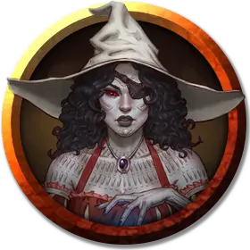

Чармейн Деймор
Charmayne Daymore
Средний Элементаль (Волшебник), нейтрально-злой, именной НИП

Класс Доспеха 12
Хиты 123 (19к8 + 38)
Скорость 30 футов, летая 30 футов (парит)
| мод | спас | ||
|---|---|---|---|
| СИЛ | 8 | −1 | −1 |
| ЛОВ | 14 | +2 | +2 |
| ТЕЛ | 15 | +2 | +2 |
| мод | спас | ||
|---|---|---|---|
| ИНТ | 20 | +5 | +9 |
| МДР | 14 | +2 | +6 |
| ХАР | 16 | +3 | +7 |
Навыки Восприятие +6, Магия +9, Обман +7
Иммунитет к урону огонь
Чувства пассивное Восприятие 16
Языки Общий, Драконий, Игнан, Эльфийский
Опасность 10 (5900 опыта)
Бонус мастерства +4
Особенности
Легендарное сопротивление (3/день). Если Чармейн проваливает спасбросок, она может вместо этого сделать спасбросок успешным.
Действия
Мультиатака. Чармейн совершает три атаки Пепельным взрывом. Она может заменить одну из атак Использованием заклинания .
Пепельный взрыв. . Рукопашная или Дальнобойная атака заклинанием: +9 к попаданию, досягаемость 5фт. или дистанция 60 футов, одна цель. Попадание: 17 (5к6) урона огнём.
Пепельная ярость (перезарядка 5-6). Чармейн создает взрыв магического пламени, с центром в точке, которую она может видеть на расстоянии 120 футов. Каждое существо в сфере радиусом 20 футов с центром в этой точке должно совершить спасбросок Ловкости Сл 17, получая 35 (10к6) урона огнём в случае провала или половину этого урона в случае успеха. Гуманоид, чьи хиты этот урон уменьшает до 0, умирает, превращаясь в крошечную фигурку из древесного угля.
Использование заклинаний. Чармейн может накладывать следующие заклинания, используя Интеллект в качестве базовой характеристики (Сл спасброска от заклинания 17):
• Неограниченно: пляшущие огоньки [dancing lights], волшебная рука [mage hand];
• 3/день: доспехи мага [mage armor];
• 1/день каждое: рассеивание магии [dispel magic], невидимость [invisibility], превращение [polymorph].
Реакции
Чармейн может совершать до трёх реакций за раунд, но только одну в ход.
Стихийное возмездие. В ответ на атаку Чармейн произносит слово на Игнане, нанося атакующему 10 (3к6) урона огнём. После чего Чармейн телепортируется вместе со всем снаряжением, которое на ней надето, на расстояние до 30 футов в незанятое пространство, которое она может видеть, оставляя безвредное облако пепла и тлеющих углей в пространстве, которое она только что покинула.
Огненное контрзаклинание. Чармейн пытается прервать заклинание, накладывание которого она видит, в пределах 60 футов. Если заклинание 4-го уровня или ниже, заклинание проваливается и не оказывает никакого эффекта. Если заклинание 5-го уровня или выше, Чармейн совершает проверку Харизму Сл, равной 10 + уровень заклинания. В случае успеха заклинание проваливается и не оказывает никакого эффекта. Независимо от уровня заклинания, заклинатель получает 10 (3к6) урона огнём, если заклинание не срабатывает.
Описание
Могущественная чародейка, Чармейн стала завидовать страсти и теплоте короля. Страстно желая обладать этими качествами, она кропотливо создавала ритуалы, чтобы истощить жизненную силу и очарование Джейроса и направить эти качества в себя. Однако магия только усилила её жадность и ревность; чем больше она брала у Джейроса, тем сильнее становилась жажда власти Чармейн, зашедшая так далеко, что она убила сваю коллегу-советника Реджину, пока та спала.
Когда она поняла, что жители Галасина не любят её так же, как короля, Чармейн преисполнилась ярости. Она использовала магию, чтобы вырвать сердце Джейроса, сохранив его живым. Затем она использовала всё ещё бьющееся сердце в качестве ритуальной фокусировки, чтобы уничтожить Галасин.